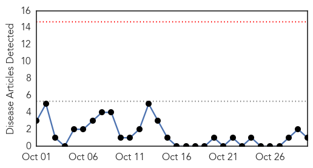

Measles
30-Day Web Trend
1 alerts, 0 warnings

30-Day Twitter Trend
0 alerts, 0 warnings

Article Locations

Article Confidences

Top Articles:
Top Tweets:
-
No tweets found for Oct 30, 2015
West Nile Virus
30-Day Web Trend
0 alerts, 0 warnings

30-Day Twitter Trend
7 alerts, 0 warnings

Article Locations

Article Confidences

Top Articles:
Top Tweets:
- 0.618
- Flavivirus news: Mosquito pool in Frisco Lakes area tests positive for West Nile virus - Dallas... https://t.co/hTBH71p4iI pathogenposse